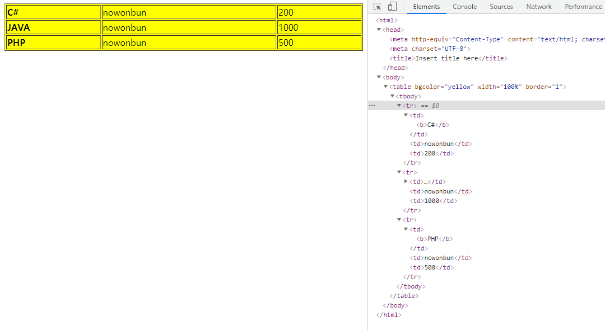

[Java] 44. Web Spring frameworkのviewで使うプログラム言語(JSTL) - XML
こんにちは。明月です。
この投稿はWeb Spring frameworkのviewで使うプログラム言語(JSTL) - XMLに関する説明です。
以前の投稿でJSTL言語のコアー、フォーマット、関数、データベースに関して説明しました。
XML処理はhtmlファイルから別のxmlファイルのデータを抽出して使うライブラリです。
最近はajaxでjsonタイプのデータを通信する方法をよく使うし、そのことに関してライブラリも多いし、使い方も使いやすいのでこのxmlライブラリをよく使いません。
しかし地域化(Localization)やメッセージのデータを取得するために使うこともあるので知ってる方がよいです。
XMLライブラリ
まず、XMLライブラリを使うためにはpom.xmlにライブラリを追加しなければならないです。
<!-- https://mvnrepository.com/artifact/xalan/xalan --> <dependency> <groupId>xalan</groupId> <artifactId>xalan</artifactId> <version>2.7.1</version> </dependency>まず、xmlファイルの一つを生成しましょう。
<?xml version="1.0" encoding="UTF-8"?> <data> <title>Hello world</title> <persons> <student> <name>Mary</name> <age>12</age> <class>5</class> </student> <student> <name>John</name> <age>13</age> <class>6</class> </student> </persons> </data>
ここでこのxmlファイルのパスはウェブブラウザ状態のパスではなく、サーバ側のディレクトリパスです。
なぜならviewのファイルはサーバ側でcontrollerのデータとviewのJSTL言語のファイルのデータを結合して最終のhtmlをブラウザに応答することです。なのでJSTLはブラウザ側のパスではなく、サーバ側のパスを考えて作成しなければならないです。
XMLパーシングと出力 <x:parse />, <x:out />
<%@ page language="java" contentType="text/html; charset=UTF-8" pageEncoding="UTF-8"%> <!-- コアーライブラリ --> <%@ taglib prefix="c" uri="http://java.sun.com/jsp/jstl/core"%> <!-- XMLライブラリ --> <%@ taglib prefix="x" uri="http://java.sun.com/jsp/jstl/xml"%> <!-- HTMLタグ開始 --> <!DOCTYPE html> <html> <head> <meta charset="UTF-8"> <title>Insert title here</title> </head> <body> <!-- xmlファイルを読み込む --> <c:import var="xmlDoc" url="data.xml"/> <!-- xmlデータパーシング --> <x:parse var="parsedDocument" xml="${xmlDoc}"/> <!-- xpathアドレスのxmlデータのdataタグの中のtitleデータを出力 --> <x:out select="$parsedDocument/data/title" /> </body> </html>XMLデータの繰り返し <x:forEach />
<%@ page language="java" contentType="text/html; charset=UTF-8" pageEncoding="UTF-8"%> <!-- コアーライブラリ --> <%@ taglib prefix="c" uri="http://java.sun.com/jsp/jstl/core"%> <!-- XMLライブラリ --> <%@ taglib prefix="x" uri="http://java.sun.com/jsp/jstl/xml"%> <!-- HTMLタグ開始 --> <!DOCTYPE html> <html> <head> <meta charset="UTF-8"> <title>Insert title here</title> </head> <body> <!-- xmlファイルを読み込む --> <c:import var="xmlDoc" url="data.xml"/> <!-- xmlデータパーシング --> <x:parse var="parsedDocument" xml="${xmlDoc}"/> <!-- dataのタグのpersonsタグのstudentのタグを繰り返し --> <x:forEach select="$parsedDocument/data/persons/student"> <p> <!-- studentタグのnameタグ --> <x:out select="name" /> <!-- studentタグのnameタグ --> <x:out select="age" /> <!-- studentタグのclassタグ --> <x:out select="class" /> </p> </x:forEach> </body> </html>
XMLデータを変数に置換 <x:set />
<%@ page language="java" contentType="text/html; charset=UTF-8" pageEncoding="UTF-8"%> <!-- コアーライブラリ --> <%@ taglib prefix="c" uri="http://java.sun.com/jsp/jstl/core"%> <!-- XMLライブラリ --> <%@ taglib prefix="x" uri="http://java.sun.com/jsp/jstl/xml"%> <!-- HTMLタグ開始 --> <!DOCTYPE html> <html> <head> <meta charset="UTF-8"> <title>Insert title here</title> </head> <body> <!-- xmlファイルを読み込む --> <c:import var="xmlDoc" url="data.xml"/> <!-- xmlデータパーシング --> <x:parse var="parsedDocument" xml="${xmlDoc}"/> <!-- xpathアドレスのxmlデータのdataタグのtitleデータをtitle変数に格納 --> <x:set select="$parsedDocument/data/title" var="title"/> <!-- データ出力 --> <x:out select="$title" /> </body> </html>XMLデータの分岐文 <x:if />
<%@ page language="java" contentType="text/html; charset=UTF-8" pageEncoding="UTF-8"%> <!-- コアーライブラリ --> <%@ taglib prefix="c" uri="http://java.sun.com/jsp/jstl/core"%> <!-- XMLライブラリ --> <%@ taglib prefix="x" uri="http://java.sun.com/jsp/jstl/xml"%> <!-- HTMLタグ開始 --> <!DOCTYPE html> <html> <head> <meta charset="UTF-8"> <title>Insert title here</title> </head> <body> <!-- xmlファイル読み込み --> <c:import var="xmlDoc" url="data.xml"/> <!-- xmlデータパーシング --> <x:parse var="parsedDocument" xml="${xmlDoc}"/> <!-- xpathアドレスのxmlデータのpersonsのstudentの二つの歳は13歳 --> <x:if select="$parsedDocument/data/persons/student[2]/age = 13"> <!-- 出力 --> John is 13 years old. </x:if> </body> </html>
XMLデータの分岐文 <x:choise />, <x:when />, <x:otherwise />
<%@ page language="java" contentType="text/html; charset=UTF-8" pageEncoding="UTF-8"%> <!-- コアーライブラリ --> <%@ taglib prefix="c" uri="http://java.sun.com/jsp/jstl/core"%> <!-- XMLライブラリ --> <%@ taglib prefix="x" uri="http://java.sun.com/jsp/jstl/xml"%> <!-- HTMLタグ開始 --> <!DOCTYPE html> <html> <head> <meta charset="UTF-8"> <title>Insert title here</title> </head> <body> <!-- xmlファイル読み込む --> <c:import var="xmlDoc" url="data.xml"/> <!-- xmlデータパーシング --> <x:parse var="parsedDocument" xml="${xmlDoc}"/> <!-- 分岐文 --> <x:choose> <!-- xpathアドレスのxmlデータのpersonsのstudentの二つの歳は13歳 --> <x:when select="$parsedDocument/data/persons/student[2]/age = 13"> <!-- 出力 --> John is 13 years old. </x:when> <!-- xpathアドレスのxmlデータのpersonsのstudentの二つの歳は12歳 --> <x:when select="$parsedDocument/data/persons/student[2]/age = 12"> <!-- 出力 --> John is 12 years old. </x:when> <!-- その以外 --> <x:otherwise> I don't know how old John is. </x:otherwise> </x:choose> </body> </html>
XSLファイルと結合 <x:transform />, <x:param />
XSLファイルとはXMLスタイルシートファイルだと思えばよいです。(eXtensible Stylesheet Language)
つまり、XML構造とXSLファイルを結合して一つのHTMLファイルを作ることです。
CSSを使ったらXML構造とXSLファイルを結合するとスタイルシートを作る必要がなくみえます。
しかしCSSは構造的な定義までは定義することが大変です。同じ構造的なスタイルでデータ別にページを繰り返して作る形なら良いと思います。例えばブログみたいにデータだけ異なって同じ形式のページを大量に生産する時に良いです。
<?xml version="1.0" encoding="UTF-8"?> <xsl:stylesheet xmlns:xsl="http://www.w3.org/1999/XSL/Transform" version="1.0"> <!-- 出力タイプ --> <xsl:output method="html" indent="yes" /> <!-- パラメータ設定 --> <xsl:param name="bgColor" /> <!-- パーシングのテンプレート --> <xsl:template match="/"> <html> <head> <meta charset="UTF-8" /> <title>Insert title here</title> </head> <body> <xsl:apply-templates /> </body> </html> </xsl:template> <!-- XMLデータのbooksタグ --> <xsl:template match="books"> <!-- ここでパラメータの特徴は${}ではなく{$}の形 --> <table border="1" width="100%" bgColor="{$bgColor}"> <xsl:for-each select="book"> <tr> <td> <b> <!-- xmlのbooksのbookのnameデータ --> <xsl:value-of select="name" /> </b> </td> <td> <!-- xmlのbooksのbookのauthorデータ --> <xsl:value-of select="author" /> </td> <td> <!-- xmlのbooksのbookのpriceデータ --> <xsl:value-of select="price" /> </td> </tr> </xsl:for-each> </table> </xsl:template> </xsl:stylesheet><?xml version="1.0" encoding="UTF-8"?> <books> <book> <name>C#</name> <author>nowonbun</author> <price>200</price> </book> <book> <name>JAVA</name> <author>nowonbun</author> <price>1000</price> </book> <book> <name>PHP</name> <author>nowonbun</author> <price>500</price> </book> </books><%@ page language="java" contentType="text/html; charset=UTF-8" pageEncoding="UTF-8"%> <!-- コアーライブラリ --> <%@ taglib prefix="c" uri="http://java.sun.com/jsp/jstl/core"%> <!-- XMLライブラリ --> <%@ taglib prefix="x" uri="http://java.sun.com/jsp/jstl/xml"%> <!-- xmlファイル設定 --> <c:import var="xml" url="data.xml"/> <!-- xslファイル設定 --> <c:import var="xsl" url="data.xsl"/> <!-- xmlとxslを結合 --> <x:transform xml="${xml}" xslt="${xsl}"> <!-- パラメータ設定 --> <x:param name="bgColor" value="yellow"/> </x:transform>

普通の管理用のウェブサービスにはXMLをパーシングして使う場合はないと思います。
でも、ブログや不特定な多数に掲示するウェブプログラムなら固定になった構造によりデータだけ変わって掲示することになります。
そしてJavascriptの非同期処理でデータを取得、設定することになるとグーグルボットには認識されてないので、Googleなどで検索エンジンには内容を認識しなく、検索結果には出ない可能性もあります。
その時にはこのXMLパーシング形式で作成するほうが良いと思います。
ここまでWeb Spring frameworkのviewで使うプログラム言語(JSTL) - XMLに関する説明でした。
ご不明なところや間違いところがあればコメントしてください。
- [Java] 51. SpringフレームワークでJPAを使い方(依存性注入@Autowired)2019/10/16 07:32:55
- [Java] 50. JPAプロジェクトでDAOクラスを作成する方法2019/10/15 20:12:35
- [Java] 49. JPAでトランザクション(transaction)を扱う方法と共通関数作成する方法(Observerパターン)2019/10/14 20:13:44
- [Java] 48. JPAでQueryを使う方法(JPQLクエリを作成する方法)2019/10/13 22:55:52
- [Java] 47. JPAのEntityクラスのリファレンス設定(cascade, fetch)2019/10/13 00:40:08
- [Java] 46. JPAのEntityクラスの基本設定(@GeneratedValue、 @ManyToMany)2019/10/11 07:30:14
- [Java] 45. JPAを設定する方法2019/10/10 07:29:43
- [Java] 44. Web Spring frameworkのviewで使うプログラム言語(JSTL) - XML2019/10/09 07:34:08
- [Java] 43. Web Spring frameworkのviewで使うプログラム言語(JSTL) - 関数、データベース2019/10/08 07:43:33
- [Java] 42. Web Spring frameworkのviewで使うプログラム言語(JSTL) - コア―、フォーマット2019/10/07 07:38:13
- [Java] 41. Web Spring webframeworkのControllerからajaxの要請する時、jsonタイプのデータを返却する方法2019/10/04 19:24:43
- [Java] 40. Web Spring frameworkでControllerを扱う方法2019/10/03 20:02:06
- [Java] 39. Spring Web Frameworkを利用してウェブサービスプロジェクトを作成する方法2019/10/02 21:00:22
- [Java] 38. Javaでウェブサービスプロジェクト(JSP Servlet)を作成する方法2019/10/01 21:48:08
- [Java] 37.イクリプス(eclipse)でトムキャット(tomcat)を設定する方法2019/09/30 22:19:34
- [Java] 60. Spring bootでApacheの連結とロードバランシングを設定する方法2022/02/28 18:45:48
- [Java] 59. Spring bootのJPAでEntityManagerを使い方2022/02/25 18:27:48
- [Java] 58. EclipseでSpring bootのJPAを設定する方法2022/02/23 18:11:10
- [Java] 57. EclipseでSpring bootを設定する方法2022/02/22 19:04:49
- [Python] Redisデータベースに接続して使い方2022/02/21 18:23:49
- [Java] Redisデータベースを接続して使い方(Jedisライブラリ)2022/02/16 18:13:17
- [C#] Redisのデータベースを接続して使い方2022/02/15 18:46:09
- [CentOS] Redisデータベースをインストールする方法とコマンドを使い方2022/02/14 18:33:07
- [Design pattern] 3-6. ステートパターン(State pattern)2021/11/17 20:04:47
- [Design pattern] 3-5. メメントパターン(Memento pattern)2021/11/16 20:01:36
- [Design pattern] 3-4. イテレータパターン(Iterator pattern)2021/11/15 19:31:28
- [CentOS] Linux環境(CentOS)でCassandra(NoSQL DB)をインストールする方法(DBeaverブラウザでNoSQL使い方)2021/11/12 17:33:58
- [Design pattern] 3-3. コマンドパターン(Command pattern)2021/11/05 17:01:42
- [Window] apache-tomcatでロードバランシング(Load balancing)する方法とセッションクラスタリング（セッション共有）2021/11/05 16:58:45
- [Window] Apacheでmod_jkとmod_proxyの差異、apacheでtomcatのwebsocketのプロキシフォーワードする方法2021/11/05 16:55:05